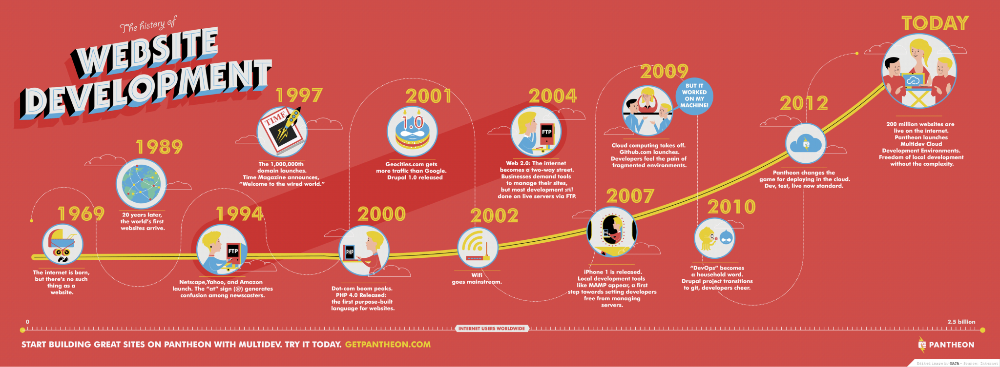
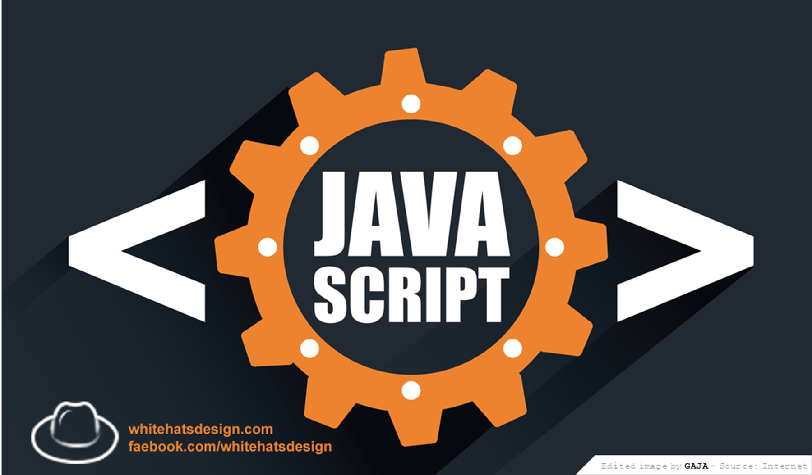

Nhà khoa học người Anh Tim Berners-Lee được cho là đã phát minh ra Website khi làm việc cho CERN vào tháng 3 năm 1989. Thời kỳ đó website chỉ là những trang web tĩnh không có gì hơn là các văn bản được định dạng bằng HTML. Tuy nhiên, không lâu sau đó, nhu cầu về các trang Web động, có sự tương tác ngày một tăng, chính vì thế sự ra đời các công nghệ Web động là một điều tất yếu. Những giải phá đầu tiên cho web động chính là những công nghệ như: CGI, Applet cho phép tạo các chương trình chạy khi người dùng gửi các yêu cầu và viết các ứng dụng nhỏ nhúng vào trang Web. Nhưng những công nghệ này vẫn bị hạn chế do cần thiết lập môi trường phía client, tốc độ chậm lẫn tính bảo mật kém.
Từ 2003 trở về trước ngành Website mới manh nha và hình thành ở Việt Nam thì công nghệ thiết kế Website chủ yếu là bằng dòng lệnh HTML và bạn cần thông hiểu lập trình như Foxpro, Microsoft Access, Visual Basic…
Từ 2007 đến 2011-2012 là thời kỳ nở rộ của hàng loạt công nghệ thiết kế Website cả theo hướng đóng (ASP) và mở (PHP) kèm theo đó là hàng loạt nền tảng công nghệ ra đời nhằm hỗ trợ cho các lập trình viên dưới dạng CMS (content system manage) hay Framework (nền tảng lập trình và ứng dụng) trong đó phổ nhất ở Việt Nam là Joomla, VBB – VBulletin, MVC…
Từ năm 2012 đến 2015 là sự phát triển toàn diện của công nghệ thiết kế Website ở cả trong nước và ngoài nước với không chỉ CMS, Framework mà cả các hệ sinh thái hỗ trợ cho việc lập trình phát triển Website vừa nhiều vừa hỗ trợ rất tốt như công nghệ Ajax, Javascript, jQuery..
Chính là giao diện của trang web chúng ta nhìn thấy
Được hình thành chủ yếu từ ngôn ngữ như HTML, CSS, Javascript (Client language) để xây dựng giao diện, xử lý hiệu ứng.
Sử dụng các ngôn ngữ như PHP, ASP, JAVA, NodeJS, (Server language) ... để lập trình, tiếp nhận request và trả kết về cho client.
Là một hệ quản trị CSDL để lưu trữ thông tin của website như bài viết, user, comment ... Có rất nhiều hệ quản trị CSDL như MySQL, SQL Server, Oracle, MongoDB.
Website cần một nơi lưu trữ, lý do là website sẽ hoạt động 24/24 nên ta phải lưu trữ ở một nơi nào đó có kết nối internet và bảo mật để tránh những rủi ro không đáng có. Thường chúng ta sử dụng Hosting hoặc VPS, hay thậm chí là Server để lưu trữ, đó là những cái máy tính có cấu hình mạnh, được đặt tại những nơi chuyên nghiệp và người ta chia nhỏ ra để cho bạn thuê lại.